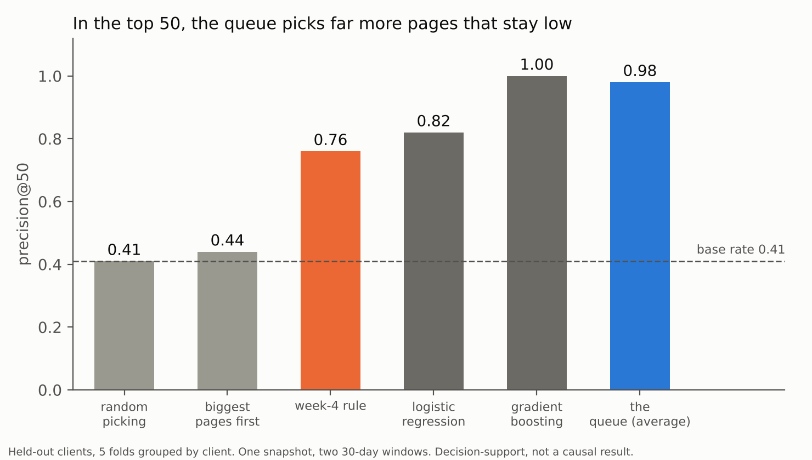
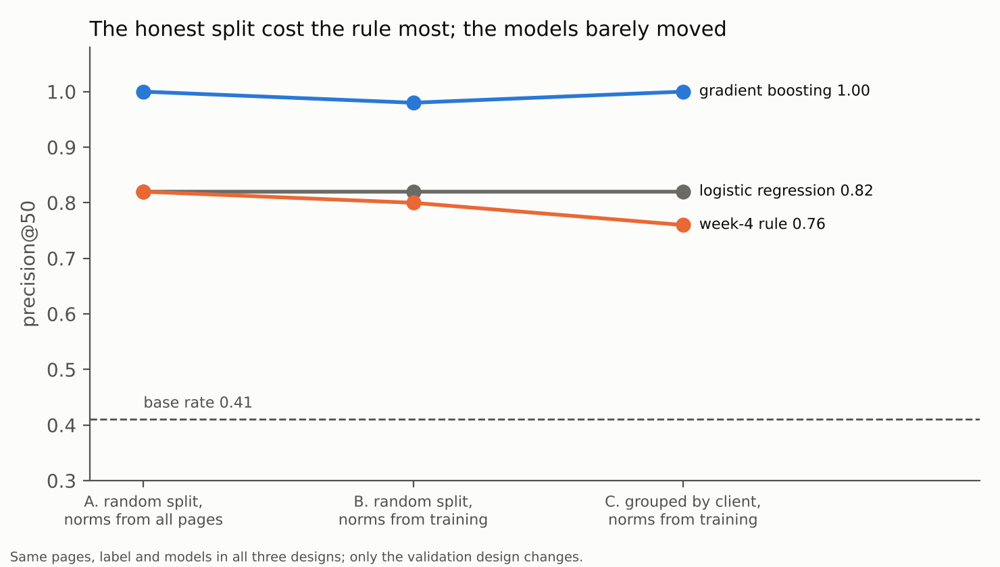
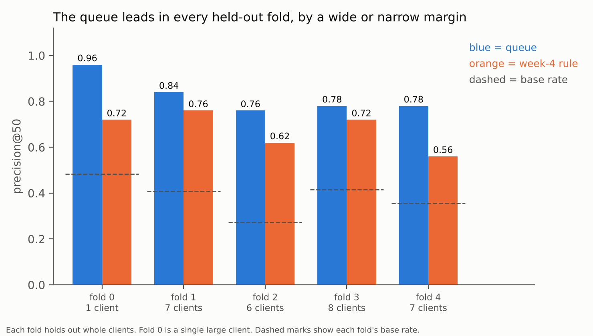
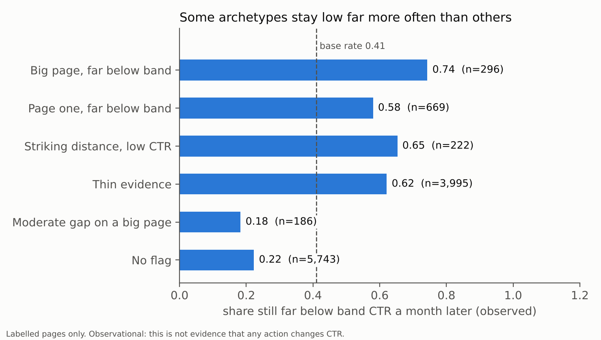

Which pages should a reviewer open first? Ranking low-CTR search pages, and testing the ranking honestly
Abstract
Question. FlyRank-style content work has a practical version of a scaling problem: an editor cannot re-read every page that already appears in search, so which visible pages under-capture clicks (a much lower click-through rate, CTR, than their position normally earns), and are likely to stay that way, deserve a metadata, content or monitoring review first? Data. 11,111 pages from 29 anonymized clients in the FlyRank ML Internship starter slice, with two 30-day windows (an earlier one for inputs, a later one for the label). Method. I compared a one-line rule built before any modelling against logistic regression and gradient boosting, validating on whole clients held out from training, and attacked my own pipeline with leakage tests. Result. On clients it had not seen, the average of the two models put 49 of its top 50 pages (98%) among pages that stayed far below their position's typical CTR, against 76% for the rule and a base rate of 41%, but one client supplies 62 of the top 100 and the result ranges from 0.76 to 0.96 across held-out folds. Use. A ranked review queue with plain reason codes for a human reviewer; the data are observational, so the paper makes no claim that any edit raises CTR.
1Introduction
Picture a content reviewer on Monday morning. There are thousands of pages that already appear in search, and time to read about fifty. Some of those pages earn clicks at about the rate their position suggests. Others sit at the same position but get far fewer clicks, which can point to a weak search snippet, a mismatched query, or something on the results page that has nothing to do with the page. Reading the right fifty first is the decision this work supports.
The content problem this comes from (the case study)
This work started from a lane brief in the FlyRank ML Internship, which poses the problem this way: which visible pages under-capture clicks or engagement and deserve metadata, content, or monitoring review? The same program's data comes from content-refresh work, where a page that already ranks can still lose clicks because its search snippet, its match to the query, or its content has drifted. FlyRank's own March 2026 research report names refresh timing as a lever (its “Freshness Multiplier” finding). This paper does not test that lever. It addresses the step before it: where should a human look first? Section 6 returns to the case and says what the findings mean for it.
The obvious approach is a rule: compare each page's CTR with the typical CTR for its position and flag the big gaps. That rule is the baseline here. The question is whether a model, trained on the same information and tested on clients it never saw, ranks the pages that stay low better than the rule does, and how much of any improvement survives an honest test.
This paper is deliberately modest in what it claims. It describes a ranking that helps a person decide what to read first. It does not show that changing a page raises its CTR; the data cannot show that.
How to read the claim words. Observed: a pattern in this data. Measured: a comparison between groups. Directional: a result with known weaknesses, such as concentration in one client. Decision-support: an ordering for a human reviewer to use, not an instruction.
2Data
Source. The anonymized starter file of the FlyRank ML Internship dataset: 30,000 content pages across 32 pseudonymized clients, 44 columns, with trailing-90-day search and analytics totals plus an earlier-30-day and a later-30-day split. Page and client identifiers are pseudonyms and are used only for grouping. Every number in this paper comes from this file. The larger hosted warehouse release exists, and I documented its contract in a separate notebook, but I did not use it for any result here.
Tables and date windows. One flat table, one row per content page; no joins to other tables. Dates are relative, not calendar dates: the file covers a trailing 90-day window ending at the export, the earlier window is days 31–60 back from the export and the later window is the most recent 30 days. Because there are only two windows per page, I could not run a time-ordered split; validation is grouped by client instead (see Methodology). No calendar dates are published.
What I kept. Pages with at least 100 impressions in the earlier 30 days and a real average position between 1 and 20 (1,205 rows had no position data). That leaves 12,770 pages. The label also needs at least 100 impressions in the later 30 days, which leaves 11,111 pages from 29 clients.
What that filter costs. The filter drops 13% of in-scope pages, and the dropped pages were much smaller (median 165 earlier impressions against 1,182 for kept pages). Pages that disappeared from search are therefore not in the evaluation, and every claim below carries that qualifier.
What I excluded from the inputs, and why. The later-window columns (they define the label); the trend columns (the label source for another question); the 90-day totals and rates (they contain the later 30 days); the days since the last update (an update inside the later window happens after the prediction would have been made); and the page and client identifiers.
Concentration. The largest client holds 39% of labelled pages. The base rate is 0.41 overall and 0.36 without that client.
3Methodology
The label (a proxy)
Pages are grouped into five position bands (1-3, 4-6, 7-10, 11-15, 16-20). A band's typical CTR is total clicks divided by total impressions in that band. A page is low_later if its CTR in the later 30 days is under half of its band's typical CTR in that window. This is a proxy I defined. It is not the observed result of any fix, and the threshold of one half is a choice.
The baseline, built first
Compare a page's earlier-30-day CTR with its band's typical CTR. Flag it if it is under half of that norm and at least 10 clicks were expected; score it by the missing clicks (expected minus actual). I froze this rule in an earlier week and did not tune it afterwards.
The models
Logistic regression, which is the one I can explain; gradient boosting with depth-3 trees, as a check; and the average of the two probabilities, which is the review queue's score. All three use the same 17 features, each known before the label window: earlier-window impressions, clicks and sessions, earlier-window CTR, average position, page age, word count and keyword and intent fields (with flags for missing values instead of silent zero-filling), and three position-relative features built from the band norm.
Validation design
Five folds grouped by client: every page is scored by a model that never saw any page from its client, and band norms are recomputed from the training clients only. The question being answered is “does it work on a client it has not seen?”. The file holds only two 30-day windows, so a time-aware split is not possible; this paper tests new clients, not new months.
Measure
Precision@K is the share of the K highest-ranked pages that really were low a month later. It is always shown next to the base rate (0.41), because a high score can just reflect a high base rate. AUC is reported as the discrimination number.
Leakage checks
I audited every feature against a timeline (inputs strictly before the label window) and ran four tests, shown in Section 4. Two are harness checks: a deliberately leaky feature must push the score to 1.0, and shuffled labels must give about 0.5.
4Results (model vs baseline)
Same pages, same label, same client-grouped folds, same measure in every row. The queue is the average of the two models.
| Strategy (same pages, same label) | precision@20 | precision@50 | precision@100 | AUC |
|---|---|---|---|---|
| random picking (average of 200) | 0.41 | 0.41 | 0.41 | 0.50 |
| biggest pages first | 0.45 | 0.44 | 0.29 | 0.38 |
| week-4 rule | 0.80 | 0.76 | 0.75 | 0.55 |
| logistic regression | 0.85 | 0.82 | 0.83 | 0.78 |
| gradient boosting | 1.00 | 1.00 | 0.93 | 0.79 |
| average of both (the queue) | 1.00 | 0.98 | 0.94 | 0.79 |

What changed when I made the validation honest
My earlier work used a random split and let the position-band norms include the pages being scored. I re-ran the same models and rule under three designs. Only the design changes between columns; each cell shows precision@50 / AUC.
| Model | A. random split, norms from all pages | B. random split, norms from training only | C. grouped by client, norms from training only |
|---|---|---|---|
| week-4 rule | 0.82 / 0.546 | 0.80 / 0.546 | 0.76 / 0.551 |
| logistic regression | 0.82 / 0.791 | 0.82 / 0.791 | 0.82 / 0.778 |
| gradient boosting | 1.00 / 0.799 | 0.98 / 0.799 | 1.00 / 0.789 |

I expected the grouped split to hurt the models more than it did, and I report the small gap as a result rather than a failure of the test. The rule's drop from 0.82 to 0.76 comes only from the norms, since the rule has no training step.
Held-out folds
| Fold | Clients held out | Pages | Base rate | Queue precision@50 | Rule precision@50 |
|---|---|---|---|---|---|
| 0 | 1 | 4,325 | 0.48 | 0.96 | 0.72 |
| 1 | 7 | 1,697 | 0.41 | 0.84 | 0.76 |
| 2 | 6 | 1,696 | 0.27 | 0.76 | 0.62 |
| 3 | 8 | 1,697 | 0.41 | 0.78 | 0.72 |
| 4 | 7 | 1,696 | 0.35 | 0.78 | 0.56 |

Leakage tests
| Test (gradient boosting, grouped by client) | AUC | precision@50 | What it shows |
|---|---|---|---|
| final features (reference) | 0.789 | 1.00 | The reference score. |
| drop avg_position | 0.784 | 0.98 | A 90-day average that overlaps the later window. Barely matters. |
| drop band-norm features (ratio, gap, miss) | 0.786 | 1.00 | The position-relative features are not carrying the result alone. |
| add days_since_last_update | 0.784 | 0.98 | Excluded on timing grounds; adding it does not raise the score. |
| add ctr_last (deliberate leak) | 1.000 | 1.00 | The label's own ingredient. The score jumps to 1.0, so the test can detect a leak. |
| shuffled labels | 0.495 | 0.32 | Labels randomly permuted. About chance, as it should be. |
The two harness checks behave as they should. Dropping avg_position or the band-norm features changes the AUC by about 0.005 or less, so no single suspect carries the result. avg_position is a 90-day average that overlaps the later window, so I keep it flagged as a limitation instead of calling it clean.
Where it fails
Of the queue's top 100 pages, 94 stayed low and 6 did not. All 6 wrong picks show an update date inside the later window, which the model could not know, compared with 57 of the 94 correct picks and 63% of all labelled pages. With only 6 wrong picks that is a lead, not a finding. 5 of the 6 wrong picks also had two clicks or fewer in the earlier window, which is weak evidence either way.
The queue is a top-of-the-list tool, not a detector. 62% of the pages that stayed low (2,816 of 4,550) sit below rank 3,000. The three largest misses (pages with 80,048 to 161,284 earlier impressions) are ranked 2 and 15 by the week-4 rule for two of them, and 3,651 for the third. The rule and the model therefore find partly different pages, and a reviewer should look at both lists.
5Limitations and honest framing
- New clients, not new months. The file has two 30-day windows, so I could not test whether the ranking holds in a future period.
- A proxy label. “Stayed far below the band norm” is my definition. It is not an observed outcome of any change, and the half-the-norm threshold is a choice.
- A filtered population. Only pages that kept at least 100 impressions in the later window are scored for accuracy; 13% of in-scope pages, the smaller ones, are not.
- Concentration. One client is 39% of the labelled pages and 62 of the queue's top 100. The result is real on these clients; I would not promise it for a client unlike them.
- One overlap I could not remove. The average position is a 90-day figure that overlaps the later window. A test without it changes little, but it is not a clean feature.
- Observational data, no causal claim. The paper does not say that editing a page raises its CTR. A page flagged as low often recovers partly on its own: of 1,187 flagged pages with a known outcome, 63% were still far below the norm a month later, 8% were back at or above it and 29% were in between. Any refresh claim has to beat that self-recovery rate with a comparison group.
- Not a model of any search engine. Nothing here predicts how a search engine ranks pages. It orders review time inside one portfolio of anonymized clients.
6Ranked recommendations (the action playbook)
Intended use. A reviewer opens the ranked queue once a week, takes the top 50 pages, checks each against the live search result and decides by hand whether to act, wait or reject. The queue orders reading time; it makes no decisions. Every action below is a review step.
Ranked actions by archetype
Archetypes are transparent if-then rules on earlier-window numbers, not clusters, so each one maps to exactly one first action. “Still low a month later” is the observed share on labelled pages (base rate 0.41).
| Archetype | Labelled pages | Still low a month later | In queue's top 100 | First review action |
|---|---|---|---|---|
| Big page, far below band | 296 | 0.74 | 69 | Check the live snippet against the main query's intent and the pages above it. Log findings before any edit. |
| Page one, far below band | 669 | 0.58 | 5 | Same snippet check; also look for ads, answer boxes or video that explain a low CTR at this position. |
| Striking distance, low CTR | 222 | 0.65 | 14 | Mostly a position gap: review relevance and internal links before rewriting the snippet. |
| Thin evidence | 3,995 | 0.62 | 12 | Low stakes (under 10 clicks expected). Review in bulk once a month. |
| Moderate gap on a big page | 186 | 0.18 | 0 | Watch list only. Most of these do not stay low; re-check after 30 days. |
| No flag | 5,743 | 0.22 | 0 | No action from this playbook. |

Each queue row carries reason codes that describe the page from earlier-window numbers (for example, the CTR against the band norm, the page's volume, how many clicks were expected, and whether the rule and the model agree). They are descriptions for a reviewer's ten-second sanity check, not explanations of the model.
Back to the case study: what this means for the content problem
For a team in the position of the reviewer above, three things follow, all at the level of decision-support. First, a transparent one-line rule already finds about three quarters of the right pages in the top 50 (0.76 against a base rate of 0.41), so a simple comparison of a page's CTR with its position's norm is a defensible place to start. Second, a model adds roughly 22 points at the top of the list on held-out clients, which on a 50-page budget is about 11 more pages worth a look, but that gain is concentrated in one large client and has not been tested on a future month. Third, what to do with a flagged page is a human step: check the live snippet, check the query match, check what changed, and log the decision. Whether any such action raises CTR is the open question this data cannot answer, and the natural next step is a small, planned comparison between reviewed and not-reviewed pages.
Human review rules
- Open the live search result and compare the snippet with what the page now says.
- Read the reason codes. Is the page high volume with real evidence, or thin?
- If the page shows a recent edit, find out what changed before acting; the model's view may be out of date.
- Look at the client, not just the page: if one client fills the top, it may be one shared issue, not thirty reviews.
- Write the decision down (act, wait, reject). Rejections are data for the next retrain.
A weekly batch is 50 pages with at most 15 from any one client. That cap lowers precision@50 from 0.98 to 0.92 and spreads the batch over 11 clients instead of 7.
What should not be automated
- Editing, republishing or deleting a page because of its score.
- Bulk title or description rewrites for the whole queue.
- Telling a client or manager that a page “will recover” or “will gain clicks”.
- Scoring pages outside the scope (under 100 earlier impressions, no position, beyond position 20), or new clients, without re-validating first.
- Treating “clicks at stake” as revenue or as clicks that will be won.
- Using the score to rank people or clients, or as an input to another model.
Cost and value of a 50-page batch
Assumption: 15 minutes per page review, 50 pages per week = 12.5 reviewer hours (assumption, not measured). The precision figures do not depend on it; the hours-per-page figures do.
| 50-page weekly batch | precision@50 | Pages found that stayed low | Reviewer hours per page found | Clicks at stake (earlier 30 days) | ...of which on pages that stayed low |
|---|---|---|---|---|---|
| random 50 pages (average of 200) | 0.42 | 20.76 | 0.62 | 276 | 163 |
| 50 biggest pages | 0.44 | 22 | 0.57 | 7,806 | 5,709 |
| week-4 rule top 50 | 0.76 | 38 | 0.33 | 10,271 | 8,186 |
| this queue, top 50 | 0.98 | 49 | 0.26 | 6,211 | 6,175 |
| this queue, capped batch (max 15 per client) | 0.92 | 46 | 0.27 | 6,061 | 5,875 |
The queue finds the most pages that stayed low (49 of 50 against 38 for the rule), but the rule's batch has more clicks at stake overall (10,271 against 6,211) because it ranks by the size of the gap in clicks. “Clicks at stake” is the earlier-30-day shortfall against the band norm, not a forecast of clicks won back. Neither list wins on everything, which is a reason to read the top of both.
Monitoring and retrain triggers
Four light checks each month, with thresholds taken from the held-out folds. They are tripwires for a human to look, not automatic retrain buttons.
- Precision floor: precision@50 on the month's labelled pages falls below 0.76 (the worst honest fold) or is not at least 0.15 above that month's base rate.
- Base-rate drift: the share of low-later pages leaves 0.22 to 0.53 (the fold range with 0.05 of room).
- Input drift: the position-band mix moves by more than 0.10 (total variation distance) from the reference.
- Definition drift: a rate column stops being in percent units, the share of rows without position data doubles, or an expected column is missing.
Retrain rule: re-fit and re-validate grouped by client when new outcomes exist and a tripwire fires, or at least quarterly. If the new model does not beat the frozen rule on held-out clients, ship the rule.
7Reproducibility
Everything on this page is generated from one notebook and one metrics file, so the text cannot drift from the results.
- Repository: https://github.com/m-awaischohan/flyrank-internship-ml
- Source of every number and figure:
work/notebooks/capstone.ipynb, which writeswork/outputs/capstone_metrics.jsonand the four figures. - Every assignment notebook, in order: research question, ML task framing, data contract, feature vector and leakage check, baseline, signal audit, model, validation and claim audit, action playbook, and the capstone.
- Seed: 42. Environment: scikit-learn 1.9.1, pandas 3.0.5, numpy 2.5.3.
git clone https://github.com/m-awaischohan/flyrank-internship-ml cd flyrank-internship-ml pip install pandas numpy scikit-learn matplotlib jupyter jupyter nbconvert --to notebook --execute work/notebooks/capstone.ipynb python work/build_paper.py # regenerates this page from the metrics file
The full ranked queue (work/outputs/action_queue.csv) is regenerated by the notebook and is not committed, by design, so that no dataset enters the repository.
8Acknowledgments and data credit
Built on the FlyRank ML Internship dataset, from FlyRank (flyrank.ai). Crediting the data source is standard research practice, and this work would not exist without it. The method framing follows the FlyRank internship curriculum, and the way FlyRank's own March 2026 research report discloses its evidence standard shaped the audit questions I asked of my own model.
This is an independent intern project. It is not an official FlyRank publication, and any errors or overstatements are mine. The data were anonymized by the data provider; this page contains no client names, queries or page addresses.